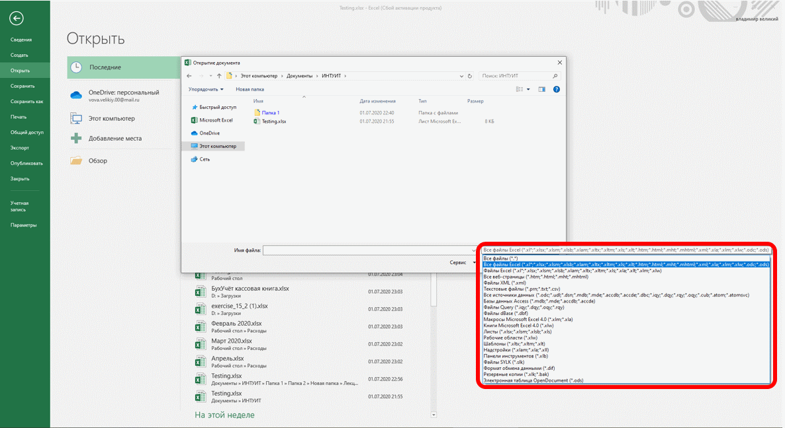

Открытие файлов
Открытие файлов
Для открытия файла выполните следующие действия.
- Нажмите вкладку Файл и выберите вкладку Открыть (рис. 2.9). Затем нажмите на кнопку Обзор.
Рис. 2.9. Открытие файла
- В окне Открытие документа (рис. 2.10) перейдите к папке, содержащей нужный файл, и щелкните два раза по значку открываемого файла или выделите этот файл и нажмите кнопку Открыть. При необходимости можно открыть сразу несколько файлов одной папки. Выделите значки требуемых файлов и нажмите кнопку Открыть.
Рис. 2.10. Выбор открываемого файла
Для открытия недавно открывавшегося файла можно выбрать его в списке Последних документы вкладки Открыть (см. рис. 2.9). Кроме того, можно воспользоваться списком Недавние документы Главного меню Windows.
Для открытия файла можно также щелкнуть по его значку в окне Проводника Windows.
Excel позволяет открывать файлы разных форматов. По умолчанию в окне Открытие документа (см. рис. 2.10) отображаются только файлы Excel. Для открытия файла другого формата щелкните по кнопке, на которой указан тип открываемых файлов (рис. 2.11) и выберите необходимый формат или режим Все файлы.

Рис. 2.11. Выбор типа открываемого файла
Таким образом, например, можно открывать базы данных Access, текстовые файлы и др. При открытии файлов других форматов может появиться запрос на преобразование файла.
При открытии в Excel 2019 документа, созданного в Excel 2003, Excel 2002 или Excel 2000, автоматически включается режим совместимости, а в строке заголовка окна документа отображается надпись Режим совместимости. Включение режима совместимости не гарантирует, что при работе с документом не будут использоваться новые и расширенные возможности Excel 2019, однако при попытке сохранения такого файла выйдет окно предупреждения со списком несовместимых элементов.